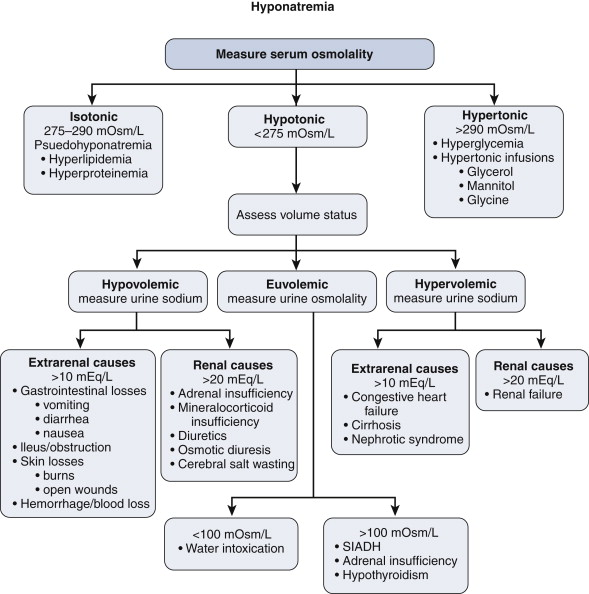
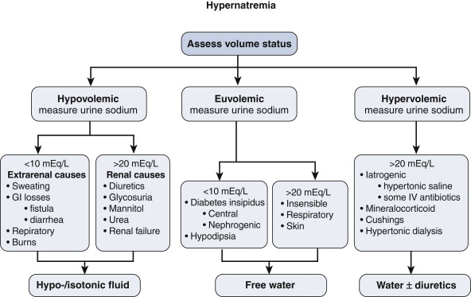

| Body Mass |
mL/kg/hr |
mL/kg/day |
| First 10kg |
4 |
100 |
| Second 10kg |
2 |
50 |
| Each kg>20kg |
1 |
20 |
| 60kg |
100 ml/hr |
2300 mL |
| Na+ |
K+ |
Cl- |
Vol |
|
| Saliva |
15 |
19 |
40 |
1.5 |
| Stomach |
50 |
15 |
140 |
2.5 |
| Bile, sm bowel |
130-145 |
5-12 |
70-100 |
4.2 |
| Sweat (insens.) |
12 |
10 |
12 |
0.6 |
| Solution |
Electroytes |
Osmolality |
| 0.9% Saline |
Na+ 154 Cl- 154 |
308 |
| 4%Dex0.18%S |
Na+ 31 Cl- 31 Gluc 40 |
284 |
| 5%Dex |
Nil Gluc 50 |
278 |
| Hartmann's |
Na+ 131 Cl- 112 K+ HCO3- 29 Ca++4 |
278 |
| %Weight |
Vol L/70kg |
Signs |
|
| Mild |
>4 |
2-3 |
Thirst, dryness |
| Mod |
5-8 |
4-6 |
Oliguria, Post hypoT Tachycardia |
| Severe |
8-10 |
>7 |
Thready pulse Low BP Cool periph, |
| Urinary Na+ |
ECF Low |
ECF Normal |
ECF High (Dilution) |
| High (>20mmol/L) |
Diuretics, renal salt-loss Addison's |
Glucocorticoid deficit Hypothyroidism, SIADH |
Renal failure |
| Low (<20mmol/L) |
Extrarenal loss - (or sequestration) |
TURP syndrome | Cirrhosis, CHF Nephrotic syn. |

| H20 Loss |
Fever, hot climate, thyrotoxicosis, diabetes
insipidus or mellitus, nephrogenic |
| Hypotonic Loss |
GI loss, sweating, osmotic diuresis |
| Salt gain |
Iatrogenic administration, steroids. |
